Quick guide
#1
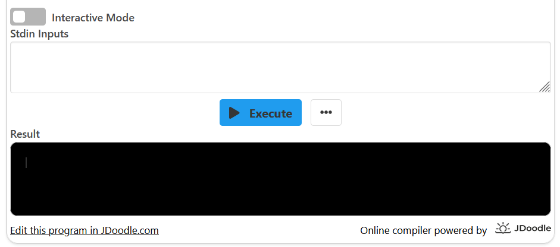#2
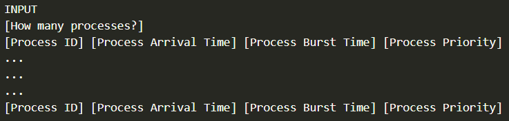#3
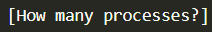#4
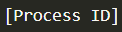#5
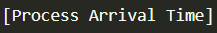#6
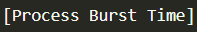#7
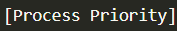#8
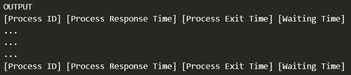#9
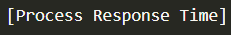#10
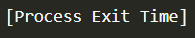#11
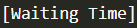#12
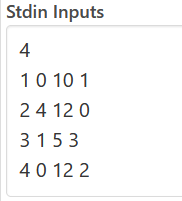#13
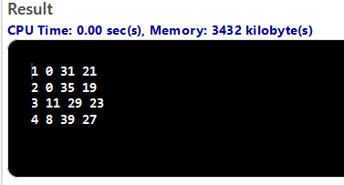#1 Explained
You can give the input for the MLFQ algorithm to process in two ways: using "Stdin Inputs" or "Interactive mode". "Stdin Inputs" allows you to type in your input before executing the program and then the console will only print the output. Meanwhile, "Interactive mode" removes the option to type in input before executing the program, and, therefore, you must type in the input directly into the console. It is recommended to use "Stdin Inputs" the first few times as you get familiar with the program.
#2 Explained
This is an overview of what your input for the program should look like. Every "[ ] entry will be replaced by numbers, but these numbers have to be written in a particular order as each position refers to a different "metric" by which the process is described. Each "[ ]" entry is explained separately below.
#3 Explained
At the start of your input, you have to indicate how many processes will enter the Multi Level Feedback Queue, after which you will describe each process separately using numbers. If you write "5", you will have to describe 5 processes that will then be executed using the MLFQ algorithm.
#4 Explained
"Process ID" indicates, which process this is. If you wrote that there will be 5 processes entering the Multi-Level Feedback Queue, then they have to be numbered from 1 to 5. This means that in the first row, the first number is "1", in the second row, the first number is "2" and so on.
#5 Explained
"Arrival Time" is the time when the process enters the queue and is ready to be executed. Lowest value is 0, meaning that when you execute the program, the process will already be somewhere in the Multi-Level Feedback Queue.
#6 Explained
"Burst Time" is the total CPU time the process needs for it to be completed and executed.
#7 Explained
"Process Priority" measures how important the process is. Depending on its priority, it will be placed in the Multi-Level Feedback Queue higher or lower. The highest priority level is "0" and lower priority levels are "1", "2", "3", ...
#8 Explained
This is the output that will be printed by the program after the MLFQ algorithm has been executed. To understand the numbers that will be printed in each position, you should understand what each "[]" entry means. This will show the effect of the Multi-Level Feedback Queue.
#9 Explained
The "Response Time" is the time the process spends waiting in the queue until it gets some CPU time for the first time.
#10 Explained
The "Exit Time" is the time, when the process is executed by the CPU and exits the Multi-Level Feedback Queue.
#11 Explained
The "Waiting Time" is the total time the process spends waiting in the queue.
#12 Explained
This is what an example input would look like if you try the program.
#13 Explained
This is the output produced using the MLFQ algorithm in response to the example input.